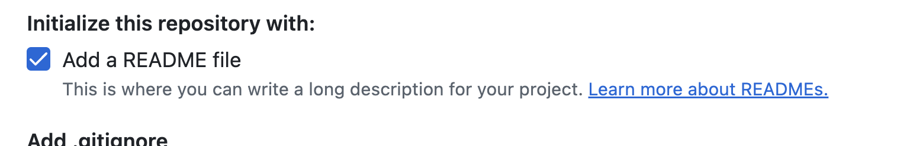
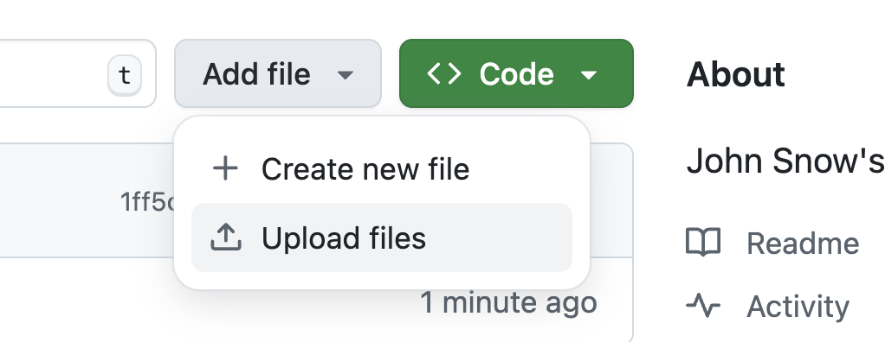
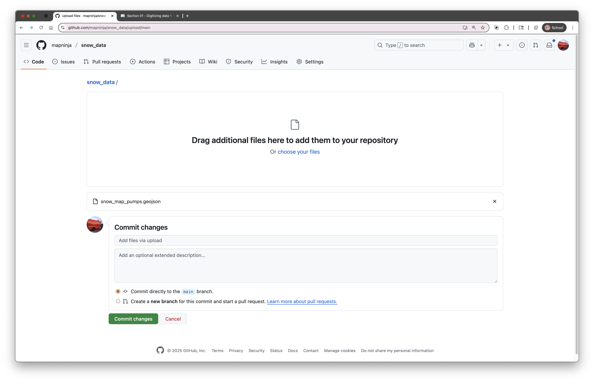
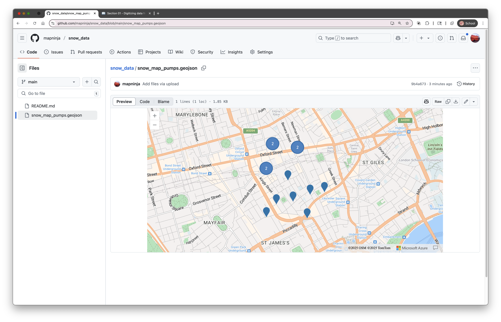
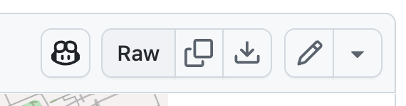

6. Uploading Your GeoJSON to GitHub
Once you’ve saved your snow_water_pumps.geojson file, you can share it publicly by uploading it to GitHub, a platform for hosting code and data. GitHub has a great feature: it automatically renders GeoJSON files as interactive maps.
You’ll also learn how to get a direct raw file URL, which you can use to load your data into other web mapping tools like Leaflet, Mapshaper, or even geojson.io again.
Step-by-Step: Uploading to a GitHub Repository
- Log in to GitHub (or create a free account if you don’t have one)
- Click the + icon in the upper right corner and choose "New repository"

- Name the repository:
snow_data - Check the option to Add a README file

- Add an optional description, then click “Create repository”
- On the new repo page, click “Add file” → “Upload files”

- Drag and drop your
snow_water_pumps.geojsonfile into the upload area - Scroll down and click “Commit changes”

Viewing the Auto-Rendered Map
Once the file is uploaded, GitHub will automatically detect that it's a GeoJSON file and show a preview map at the bottom of the file view page.

This preview allows you to zoom in and explore the points you digitized — a great way to check your work or share it with others.
Getting the Raw File URL for Web Maps
If you want to use your GeoJSON file in another web mapping tool, you need the raw URL.
- In the GitHub repo, click on your file name (
snow_water_pumps.geojson) - Click the “Raw” button (near the top right)

- Copy the URL from your browser’s address bar — it will look something like:
https://raw.githubusercontent.com/your-username/snow_data/main/snow_water_pumps.geojson
This is the direct link to the GeoJSON file itself — and it can be used in tools that accept remote URLs, like geojson.io, Leaflet.js, or even Mapshaper.
In the final section, we'll create a simple web map, using the data we have created, and serve it from Github, as well.